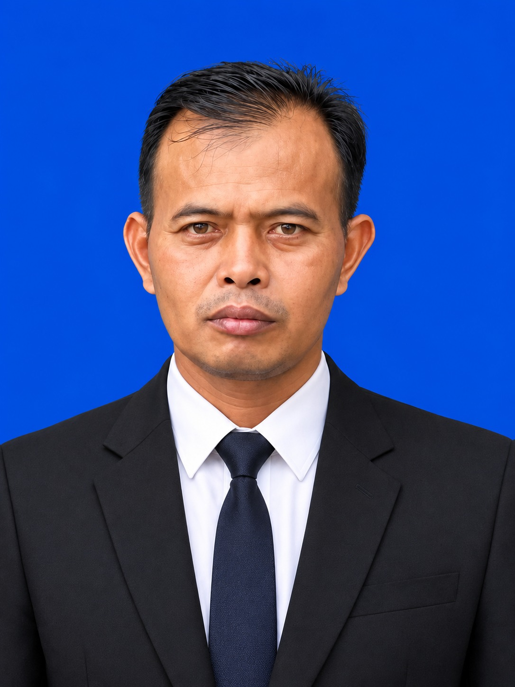
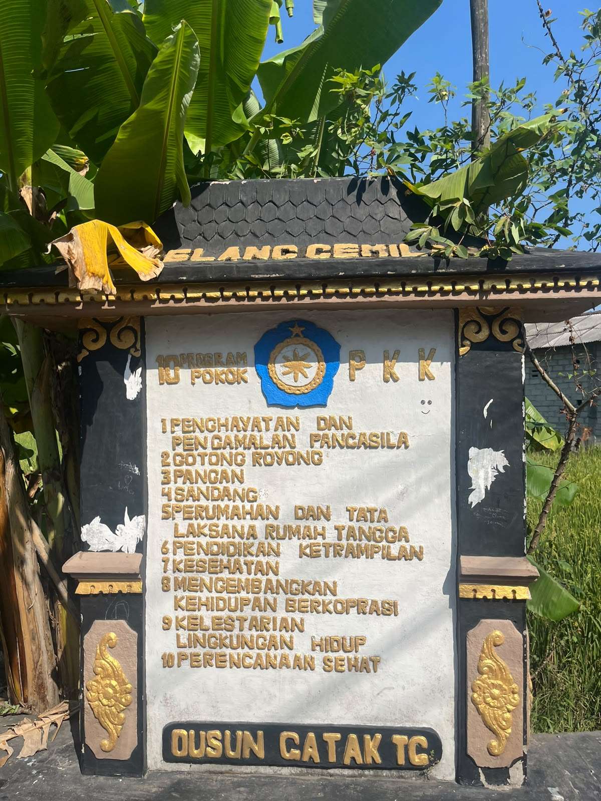
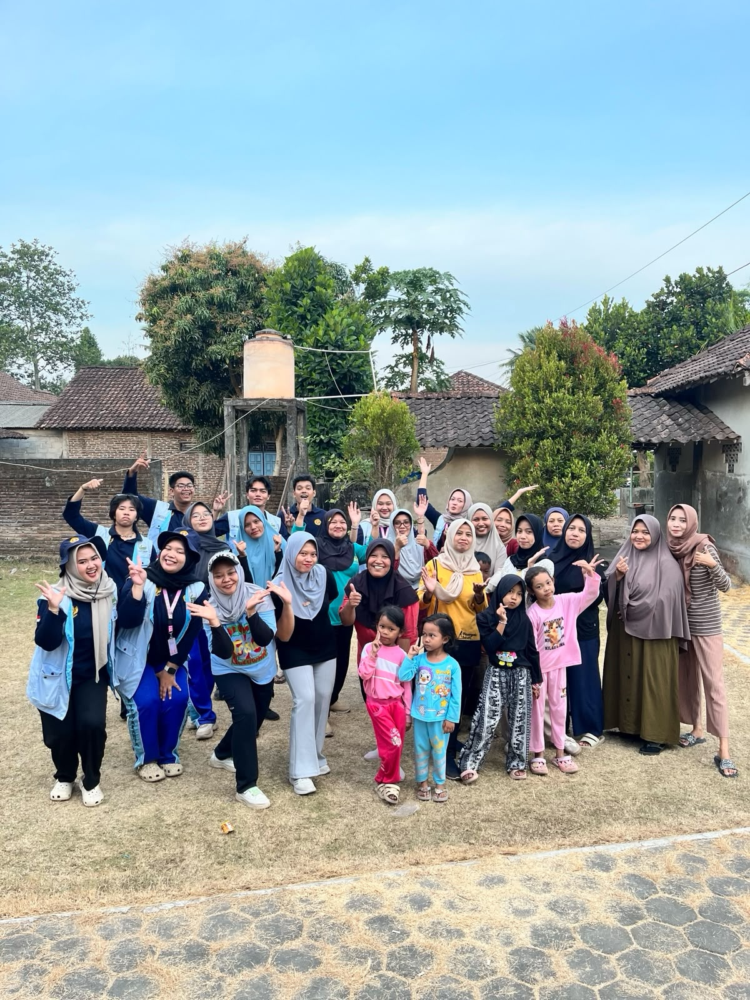
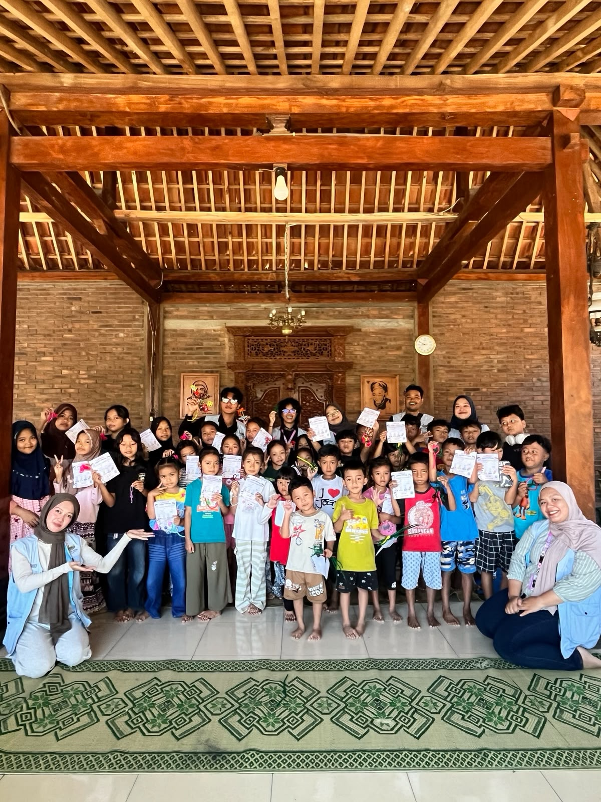
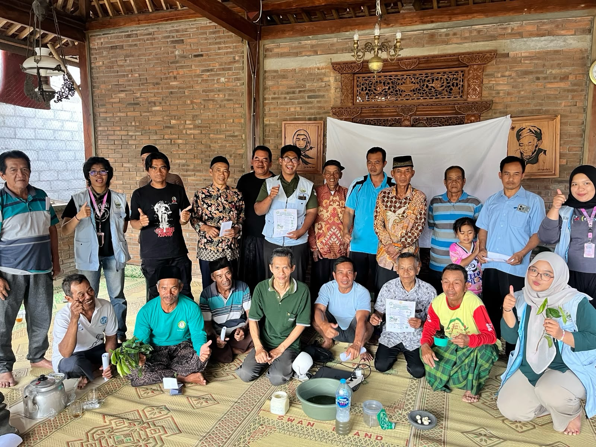
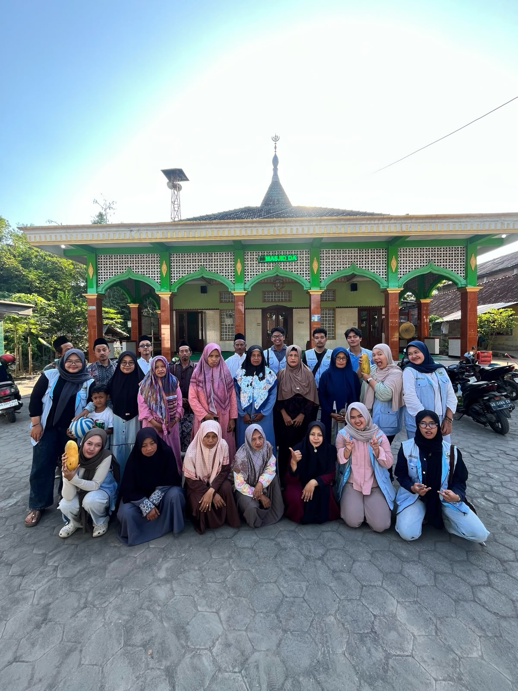
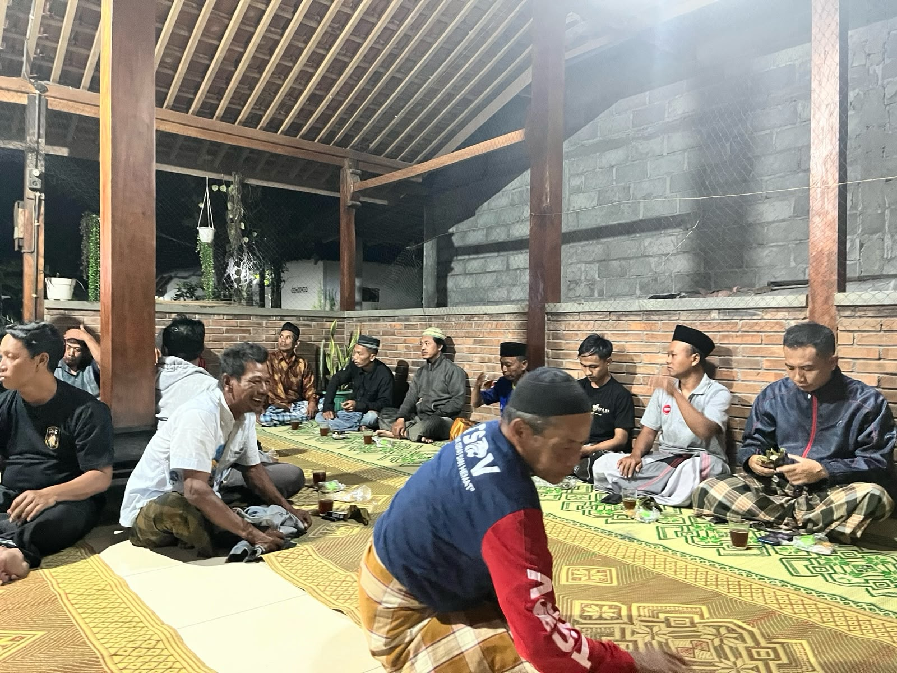
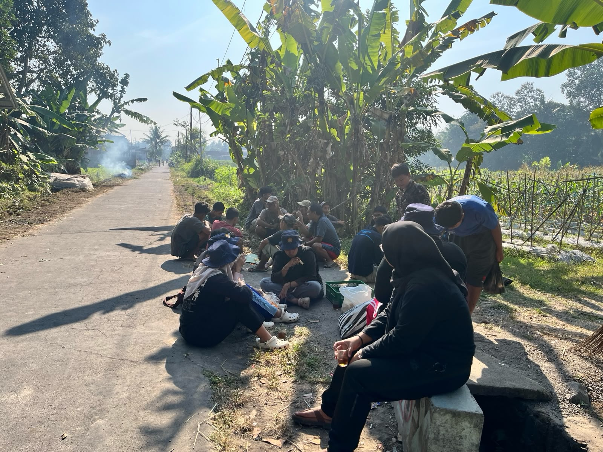
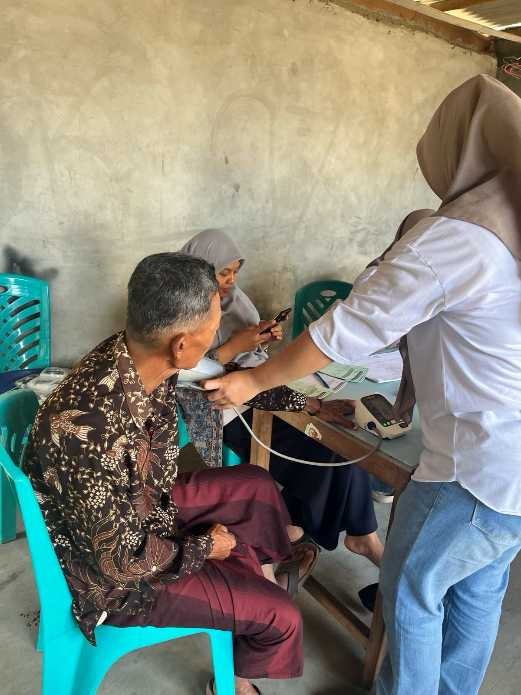

Dengan semangat gotong royong, Desa Gatakarsa berupaya menjadi desa yang maju dan berkelanjutan, dibangun di atas fondasi wilayah dan sumber daya alam berikut.
Dusun Gatak berada di Desa Plosogede, Kecamatan Ngluwar, Kabupaten Magelang, Jawa Tengah (Koordinat: 7°38'20" LS, 110°15'52" BT).
Terletak di lembah Perbukitan Menoreh dengan topografi dataran hingga perbukitan (ketinggian 200–250 mdpl).
Memiliki luas sekitar 590 hektare yang mayoritas digunakan untuk pertanian, permukiman, dan fasilitas umum.
Terdiri dari 9 dusun, yaitu Gatak, Dongkelan, Druju Kidul, Druju Tegal, Ganjuran, Karang Sanggrahan, Ngemplak, Ploso Kidul, dan Ploso Wetan.
Dengan semangat gotong royong, Desa Gatakarsa berupaya menjadi dusun yang maju dan berkelanjutan.
Sektor pertanian adalah mata pencaharian utama. Didominasi oleh sawah irigasi untuk komoditas padi, jagung, cabai, dan hortikultura. Didukung tanah subur dan sumber air melimpah.
Berbagai produk lokal dari tangan-tangan kreatif masyarakat dusun yang mendukung dan menggerakkan roda ekonomi kerakyatan secara mandiri.
Menawarkan pesona pemandangan alam khas lembah Perbukitan Menoreh serta kebudayaan lokal yang berpotensi menjadi destinasi wisata menarik.








Jumlah Penduduk
RT
UMKM Aktif
Program Dusun